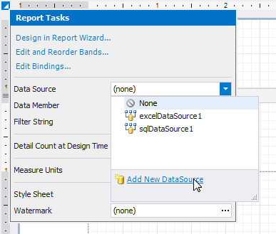
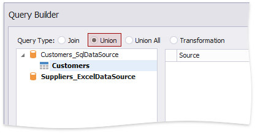
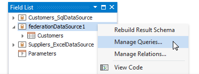

Bind a Report to Union-Based Federated Data Source
You can create a federated data source for your report to display data combined from several sources. This topic demonstrates how to use the Union and UnionAll operations to combine data into a single query.
Create a Report and Data Sources
Add a SQL data source that provides one data table.
Add an Excel data source that provides the other data table.

Create Data Federation and Bind the Report to It
Click the report's smart tag, expand the DataSource property's drop-down menu and click Add Report Data Source.

In the invoked Data Source Wizard, select Data Federation and click Next.

On the next page, click Add Query.

In the invoked Query Builder (adapted to federated data sources), choose Union as a query type.

Or you can choose Union All.

Double-click the Customers table and the Excel data source. The two sources are added to the query.

The query includes only fields that have identical names and types in the origin sources.

Enable check boxes for the data fields you want to include in the query result set.
Rename fields.

Click OK to close the Query Builder. Click Finish to complete the Data Source Wizard.
The Wizard creates a new FederationDataSource that includes the single Customers query. This data source becomes available in the Report Explorer's Components node. The Field List reflects the data source structure.

The federated query's default name equals to the first source's name (the Customers table in this tutorial). You can rename this query in the Manage Queries dialog. To invoke it, right-click the data source in the Field List or Report Explorer and select Manage Queries in the context menu.

Once you rename the query, update the report's DataMember property.

Design the Report Layout
Click the report's smart tag and select Design in Report Wizard.

In the invoked Report Wizard, select Table Report and click Next.

Select data fields to display in the report and click Finish. You can also go to the next page to continue layout creation.

The resulting layout looks similar to the following image:

Switch to the Preview tab to see the report document. It displays contacts from the Customers and Suppliers tables.

Note
Duplicate contacts from the Customers and Suppliers tables are not removed in the Union All mode.